Вы можете просмотреть информацию о работе после того, как вы дважды щелкните этот пункт в списке заданий или пометите его, а затем нажмите «Открыть».
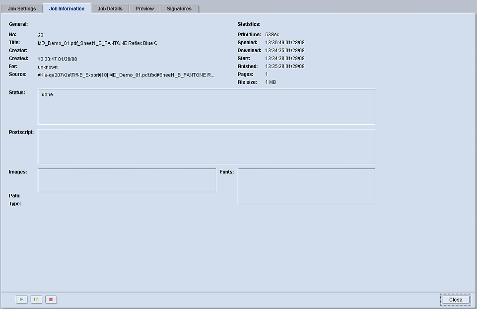
Вы увидите вкладки «Настройки работы», «Информация о работе», «Детали работы», «Предварительный просмотр» и «Подписи». Вы можете просмотреть параметры работы в этих вкладках. Кроме того, вы можете перепечатать задания (см. также Перепечатка единичных разделов), приостановить или возобновить их.
Режим просмотра деталей закрывается, когда вы нажимаете «Закрыть», и список заданий или список компонентов снова отображается.
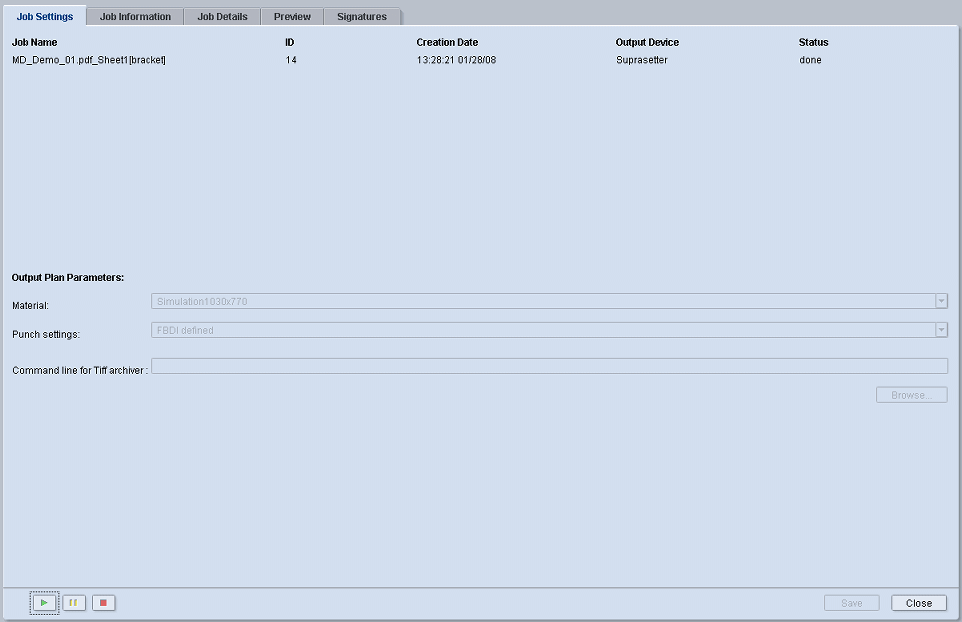
Эта вкладка показывает вам следующую информацию:
Вы можете просматривать данные об открытой работе в этой вкладке, например, время обработки, размер файла, цвет разделения, статус и т. д.
Вы можете просмотреть более подробную информацию об открытой работе на этой вкладке, например, цвет разделения, разрешение, выходной формат, материал и т. Д.
Данные Tiff-B показаны на этой вкладке, такие как:
Информация о материале очень важна, потому что она может передаваться через интерфейс JDF или FBDI. JDF (формат определения работы)) Поддержка) и может перезаписывать "Материальное" свойство виртуального принтера (см. Виртуальные принтеры).
Вы можете просмотреть предварительный просмотр работы в этой вкладке. Предварительный просмотр может отличаться в зависимости от того, как была обзаданиена задание:
Эта визуальная проверка позволяет быстро определить содержание выбранной работы. Вы также можете использовать предварительный просмотр в качестве макета и проверки качества перед визуализацией, присутствуют ли все элементы изображения и подходят ли они для макета страницы и правильно ли назначены цвета (цвета процесса и цвета пятна).
Все отдельные разделения (компонентные задания) всегда присутствуют в работе, если задания обрабатываются с отсортированным выходом. По этой причине предварительный просмотр такой работы включает в себя все цвета работы.
Соответственно, показанный предварительный просмотр является разноцветным, если в работе есть цветные изображения или элементы.
Вы можете открывать только отдельные разделы (компонентные задания) в несортированном режиме вывода.
Соответственно, предварительный просмотр всегда показывает одноцветный вид работы компонента.
Вы можете переключить предварительный просмотр на разрешение Imagesetter, например, чтобы проверить детали скрининга в более высоком коэффициенте масштабирования, если у вас есть лицензия на «Доказательство шаблона Halftone» Когда вы открываете вкладку «Предварительный просмотр», мигающий символ с красной стрелкой рядом с списком «Резолюция» указывает на то, что предварительный просмотр с высоким разрешением также доступен.
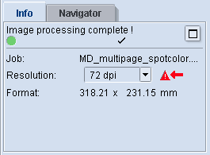
Затем вы можете переключиться на разрешение снимка в поле списка и вернуться к более низкому разрешению, когда это необходимо.
В предварительном просмотре с высоким разрешением предварительный просмотр показывает изображения, «отсканированные», чтобы привлечь ваше внимание к тому факту, что страница теперь отображается в высоком разрешении.
Для просмотра и измерения изображений предварительного просмотра доступны различные инструменты. Вы можете использовать эти инструменты для следующих действий:
Листы или страницы отображаются в виде контоновых изображений в окне предварительного просмотра слева от вкладки. Бары прокрутки появляются, если панель изображения слишком мала для отображения предварительного просмотра из-за установленного коэффициента масштабирования. Вы найдете панель инструментов ниже графики.
Правая часть окна предварительного просмотра содержит настройку и панель отображения для предварительного просмотра. Вы найдете следующие элементы сверху донизу:
На этой вкладке вы найдете кнопки для максимизации / восстановления окна Printmanager:
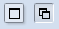
Нажмите «Максимизировать» или «Восстановить», чтобы отделить окно предварительного просмотра от Printmanager и максимизировать дисплей экрана или восстановить его снова в Printmanager.
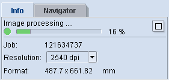
Бар прогресса, указывающий, сколько изображения уже отображается, отображается рядом с ним:
Название задания и подробная информация о разрешении (и варианте с более высоким разрешением, если он у вас есть) и размер дисплея показаны ниже.
Окно Navigator показывает вам обзор изображения, которое загружается в окне предварительного просмотра. Вы можете использовать окно Навигатора следующим образом:
Продолжайте следующим образом: указатель мыши превращается в крест, когда вы перемещаете его к окну Навигатора. Удерживая кнопку мыши, создайте коробку над той частью предварительного просмотра, которую вы хотите. Когда вы отпустите кнопку мыши, отмеченный раздел показан увеличенным в панели отображения в левом столбце. Теперь вы можете изменить размер или положение отмеченной секции в окне Навигатора.
Даже если в окне Навигатора уже есть зажимная маска, можно определить новую обрезанную область, нарисовав новую коробку за пределами существующей маски. Вы также можете нарисовать новую коробку в существующей маске клипа.
Альт
Ключ.
Вы также можете масштабировать дисплей в окне предварительного просмотра с помощью инструмента масштабирования (увеличивающего стекла). Коробка в окне Навигатора теперь также показывает раздел, показанный в окне предварительного просмотра.
Чтобы изменить вырезанную область, поместите указатель мыши на границу или угол коробки. Указатель мыши теперь выглядит как двойная стрела. Удерживая левую кнопку, теперь можно менять размер коробки.
Чтобы переместить вырезанную область, поместите указатель мыши внутрь коробки. Мышиный указатель теперь выглядит как рука. Удерживая левую кнопку мыши, вы можете перемещать вырезанную область в окне Навигатора.
Быстрее переместить указатель мыши в нужное положение в окне Навигатора, а затем нажать левую или правую кнопку мыши. Затем маска клипа перемещается в положение, которое вы щелкнули. Крест указателя мыши образует центр обрезанной области.
Панель инструментов также отображает вращающийся символ, в то время как изображение загружается на экран, потому что вы не можете видеть планку прогресса во вкладке «Навигатор» (см. также Info Tab).
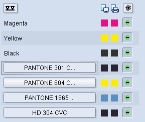
В этом списке перечислены все цветовые разделения процесса, содержащиеся в открытой работе с именами и двумя цветовыми коробками в каждом случае. Цветовые коробки показывают, как выглядит цвет в предварительном просмотре изображения на мониторе и при печати.
Помимо названий цветов и иконок для отображения цвета, вы также найдете следующие столбцы:
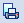
Вы включаете или отключаете эти функции, нажав соответствующее поле в каждом столбце. Коробки указывают их состояние следующим образом:
Если нажать на
Ctrl
одновременно нажимаете кнопку «Показать / скрыть разделение», кнопка, которую вы нажали, изменяет состояние, которое вы хотите. В то же время все другие кнопки «Показать / Скрыть» переключаются на противоположное состояние кнопки, которую вы нажали. Другими словами, кнопка, которую вы нажали, включена, а все остальные отключены или наоборот.
Изображение предварительного просмотра пересчитывается каждый раз, когда вы переходите от показа к сокрытию разделения или наоборот. Появляется прогресс-бар («Обработка изображений...»), пока это происходит.
Цвета пятна в работе показаны ниже цветов процесса в панели дисплея для разделения справа от окна. Цвета точек отображаются как значения CMYK для предварительного просмотра экрана. Значения CMYK, которые заменят цвет пятна, могут поступать из различных источников. Вы можете изменить эти значения, нажав кнопку с именем цвета пятна, чтобы отобразить его в диалоге «Просмотр / Цвет» (см. Изменение CMYK экрана отображения точечных цветов). Пятнистый цвет, который не имеет действительного представления CMYK, показан ярким цветом (как правило, ярко-зеленым). Этот поразительный цвет подчеркивается вопросительными знаками в панели дисплея для разделения.
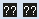
 Примечание: Эти настройки относятся исключительно к экранному дисплею и не влияют на вывод снимка.
Примечание: Эти настройки относятся исключительно к экранному дисплею и не влияют на вывод снимка.
Нажмите на кнопку с названием цвета пятна. Открывается диалог, в котором можно модифицировать экран отображения цвета пятна.
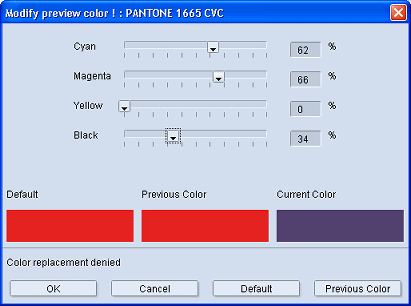
Значения для представления CMYK цвета пятна могут быть изменены с помощью ползунок или входных ящиков.
Цвет, который в настоящее время установлен, показан в цветовом поле «Текущий цвет». Последний набор цветов показан в патче «Предыдущий цвет» и цвет, взятый из цветовой таблицы в патче «По умолчанию».
Нажмите кнопку «По умолчанию», чтобы использовать цвет из таблицы цветов. Кнопка «ОК» используется для принятия цвета, который в настоящее время установлен, а «Отмена» используется для закрытия окна без принятия настроек.
Подтвердите свои настройки, нажав «ОК». Диалог закрывается.
Эта панель показывает настройки или измерения. Настройка и панели отображения варьируются в зависимости от выбранного вами инструмента.
В этом примере показаны измеренные данные.
Вы найдете панель инструментов на нижнем краю окна предварительного просмотра. Вы найдете следующие инструменты слева направо:
Вы можете сделать геометрические измерения (длина и угол) в предварительном просмотре работы. Например, эта функция позволяет проверить позиционирование и размер объектов.
1. Нажмите инструмент измерения («правильный») в панели инструментов.
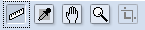
2. Установите единицу измерения, которую вы хотите (пиксель, дюйм или мм) в поле списка в настройках и панели отображения.
3. Удерживая левую кнопку мыши, перетащите линию по длине, которую вы хотите измерить. Отпустите кнопку мыши в вашей цели. Измеренная линия сохраняется до тех пор, пока вы не нарисуете новый или не измените инструмент.
Примечание: Создание горизонтальных, вертикальных или диагональных линий проще, если одновременно удерживать клавишу Shift. Эти линии нарисованы в 45°, видимых от базовой линии.
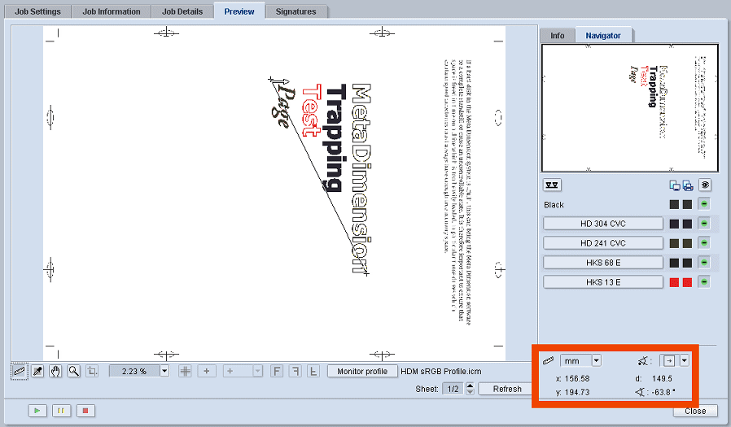
4. Вы можете просмотреть данные геометрии измеренной линии в правом нижнем углу окна предварительного просмотра:
Вы можете выбрать единицу измерения (пиксель, дюйм или мм) в поле списка выше измеренных данных. Выбранный вами блок также используется для деталей изображения (вверху справа).
Определить цветовой рецепт одиночных пикселей можно с помощью инструмента цветовых данных («пипетка»).
1. Нажмите на инструмент цветных данных («пипетка») в панели инструментов.
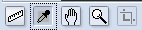
2. Данные о цвете в положении, где измеряется кончик пипетки.
3. В правом нижнем углу читайте данные о цвете пикселей, отмеченных указателем мыши.
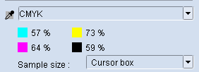
Если в изображении предварительного просмотра есть точечные цвета, вы также можете измерить части точечного цвета. Вы можете переключаться между значениями CMYK и цветом пятна в поле списка выше измеренных данных.
Если вы выбрали фактор масштабирования, в котором можно увидеть только часть изображения предварительного просмотра, вы можете нажать на инструмент для сдвига содержимого изображения («рука»).
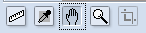
Затем вы можете перемещать раздел изображения, позиционируя указатель мыши над частью изображения и удерживая левую кнопку мыши. Теперь вы можете переместить раздел изображения.
Перемещение раздела изображения с помощью инструмента «рука» в окне предварительного просмотра позволяет позиционировать его гораздо точнее, чем перемещение в окне «Навигатор».
Дисплей постоянно обновляется, поэтому возможны «дерзкие» движения (зависит от объема данных вашей работы и от производительности вашего компьютера). Данные с высоким разрешением могут занять довольно много времени для обновления дисплея.
Вы можете увеличить (до 1 600%) или уменьшить отображение изображения предварительного просмотра с помощью инструмента масштабирования («увеличивающее стекло»). Эта функция может помочь вам проверить точность регистра, например, или оценить критические точки на изображении или измерить длину или угол.
Вы можете выбрать из нескольких наборов факторов масштабирования в поле списка, помимо инструмента масштабирования. Вы также можете ввести свой собственный фактор масштабирования в коробку и подтвердить его.
Входить
.. Любые факторы, которые вы устанавливаете отдельно, добавляются в этот список.
Предварительный просмотр всегда отображается в виде обзора, когда страница открывается впервые. Вы можете изменить этот дисплей несколькими способами:
Кнопка для отображения пиксельной матрицы позволяет показать матрицу в предварительном просмотре для коэффициентов масштабирования 500% и выше. Можно использовать эту матрицу, например, для анализа проблем экрана.
Нажмите эту кнопку еще раз, если хотите скрыть матрицу.
Вы также можете загрузить растровые карты полутонов в том же формате, что и открытая задание для предварительного просмотра растровой карты. Вы можете использовать эту опцию, например, для сравнения полутоновой растровой карты нового разделения с оригинальным разделением после перепечатки.
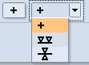
В поле списка сначала выберите страницу, на которую будет загружена растровая карта. Доступны следующие варианты:
Диалог появляется, когда вы нажимаете кнопку «Добавить разделение» слева от списка. Этот диалог позволяет загружать отдельные битовые карты в предварительный просмотр.
При необходимости вы можете использовать «Заглянуть», чтобы перейти в папку, где подается файл растровой карты, который вы хотите. Выберите файл растровой карты и нажмите «Открыть». Вы можете выбрать несколько файлов одновременно, удерживая клавишу Shift или Ctrl и нажимая на различные элементы. Если формат растровой карты соответствует открытой работе, разделение загружается в предварительный просмотр растровой карты. Он назначается спереди или сзади, как указано в списке.
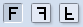
Эти три кнопки включаются только в том случае, если загружены передняя и задняя части подписи. Эти кнопки позволяют контролировать ориентацию спины без поворота передней части. Для этого должно быть видно по крайней мере одно разделение на спине. Пиксели на передней панели отображаются вместе с пикселями на задней панели, так что вы думаете, что задняя часть «сияет».
Проблемы с регистрацией могут возникнуть, если ориентация страницы или край захвата изменены, когда передняя и задняя части подписи напечатаны в той же форме. Чтобы проверить это, вы можете изменить Ориентация подписи.
Эта функция позволяет перевернуть заднюю часть подписи, в зависимости от того, как подпись используется в прессе (поворот или падение):
Задняя часть подписи переворачивается вертикально (Тумбл: повернуть сверху вниз.
Для просмотра заданий с несколькими страницами вы можете выбрать нужную страницу в поле списка или ввести ее в текстовое поле.
Примечание: Указанная страница относится к одному «листу». Вы не можете выбрать одну страницу на подписи или передней или задней стороне с этой функцией.
Предпросмотр экрана истинного цвета в мягком качестве невозможен во вкладке «Предпросмотр». Если управление цветом включено для обзаданиенных заданий, предварительный просмотр автоматически примерно соответствует истинному цвету.
Вы можете использовать созданный вами профиль ICC (мониторная характеристика) для предварительного просмотра:
Чтобы иметь возможность использовать дисплей монитора истинного цвета, характеризующий монитор, вы будете использовать и хранить профиль ICC в подпапке «...\UserDir\ICCProfiles\RGB» в папке программы Prinect Shooter.
Нажмите кнопку «Профиль монитора» во вкладке «Просмотр».
Появляется диалог браузера с траекторией по умолчанию «...\UserDir\ICCProfiles\RGB». Выберите профиль ICC, соответствующий вашему монитору. Этот профиль будет использоваться для предварительного просмотра экрана.
Примечание: Чтобы вернуться к профилю монитора по умолчанию, просто нажмите «Профиль монитора», удерживая клавишу Ctrl.
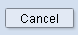
В зависимости от производительности вашего компьютера может потребоваться некоторое время, чтобы вычислить предварительный просмотр с большим количеством данных (большой размер и / или высокое разрешение). Вы можете остановить запущенную обработку изображений, нажав «Отменить». Затем вы можете пересчитать предварительный просмотр с другими вариантами.
Нажатием правой кнопкой мыши на изображении предварительного просмотра отображается контекстно-чувствительное меню.
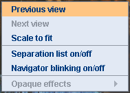
Вы можете использовать эту команду, если хотите вернуться к предыдущему фактору масштабирования для просмотра предварительного просмотра.
Эта команда доступна только в том случае, если вы впервые выбрали «Предыдущее представление». Он отменяет эту команду.
Вся страница отображается в предварительном просмотре.
Используйте эту функцию, чтобы показать или скрыть настройку и панель отображения.
Вы можете установить, что кадр обрезанной области мигает в окне Навигатора, когда вы находитесь во вкладке «Навигатор». Это может быть полезно, если цвет рамы едва отличается от мотива изображения окна Навигатора.
Примечание: Некоторые сочетания клавиш могут использоваться только с определенными настройками пользовательского интерфейса или условиями работы (например, если есть точечные цвета).
Из содержимого файлов TIFF-B, сгенерированных Prinect MetaDimension, Prinect Shooter может видеть, являются ли, например, несколько цветовых разделений частью одной начальной работы. ""На вкладке «Подписи» отображаются все разделения, которые находятся в работе или компонентной работе, если задания сортируются при выходе (см. Сортированный и несортированный выход ):
В поле «Атрибут бухгалтерского учета» вы можете назначить атрибут бухгалтерского учета в среде системы Prinect, который отмечает причину перепечатки пластин. Этот атрибут регистрируется, например, «Пунктом анализа» и может быть использован для последующего анализа. Доступны следующие варианты:
На вкладке «Подписи» отображается только одна подпись задания открытого компонента, если задания не сортируются при выходе:
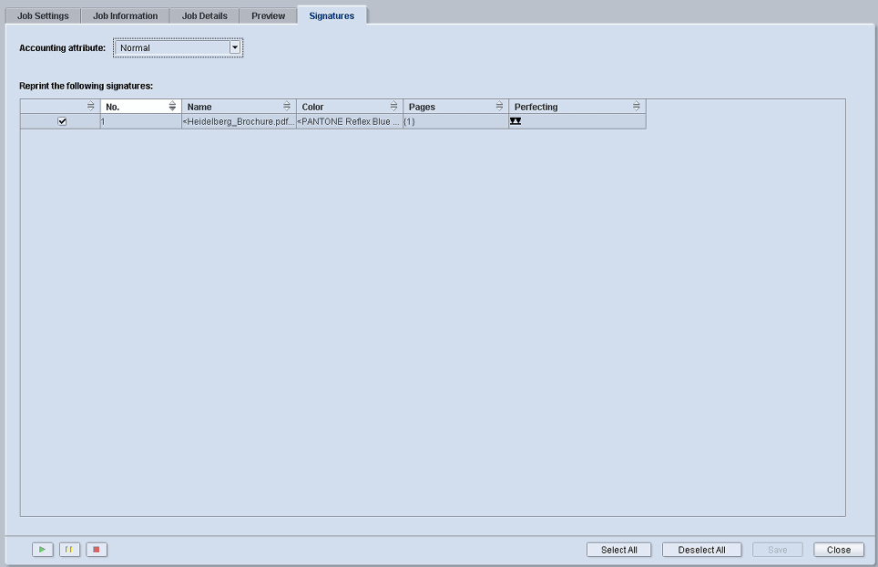
Вкладка «Подписи» позволяет вам контролировать перепечатку разделений (см. Перепечатка единичных разделов).
Copyright © 2013 Heidelberger Druckmaschinen AG